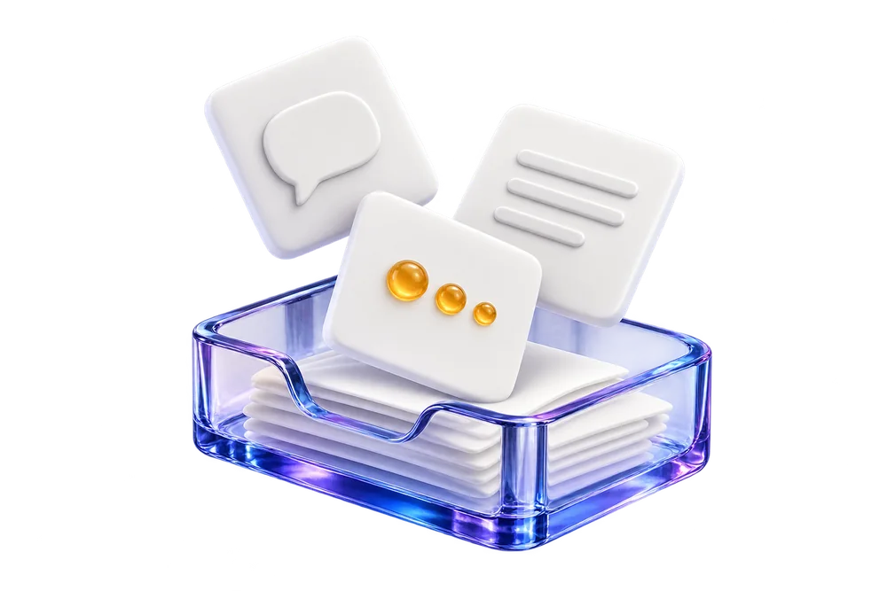
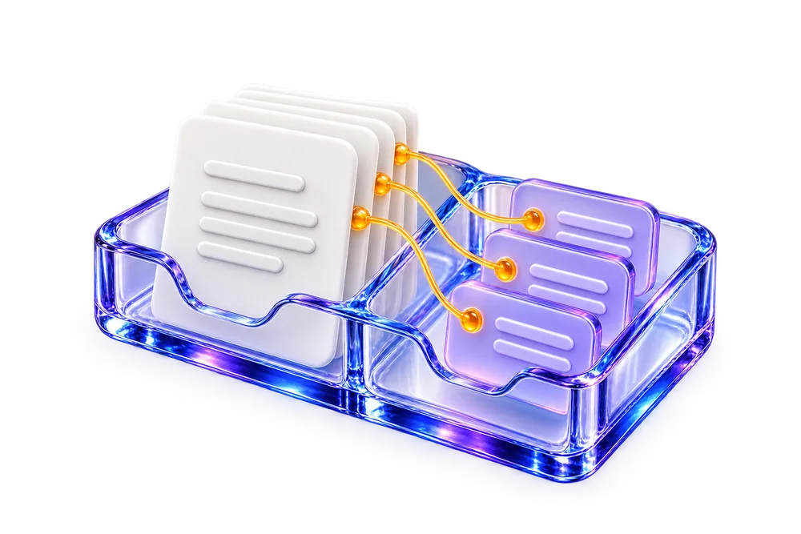
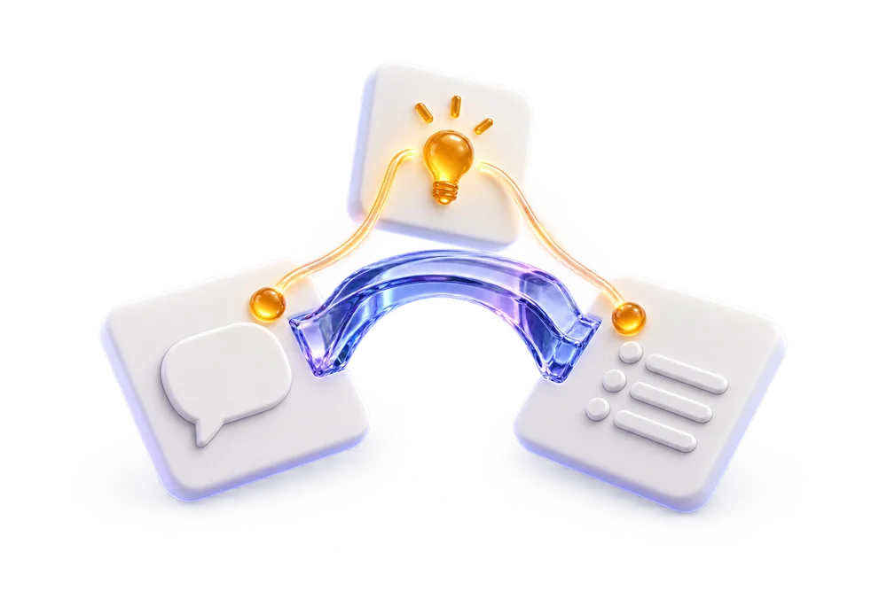
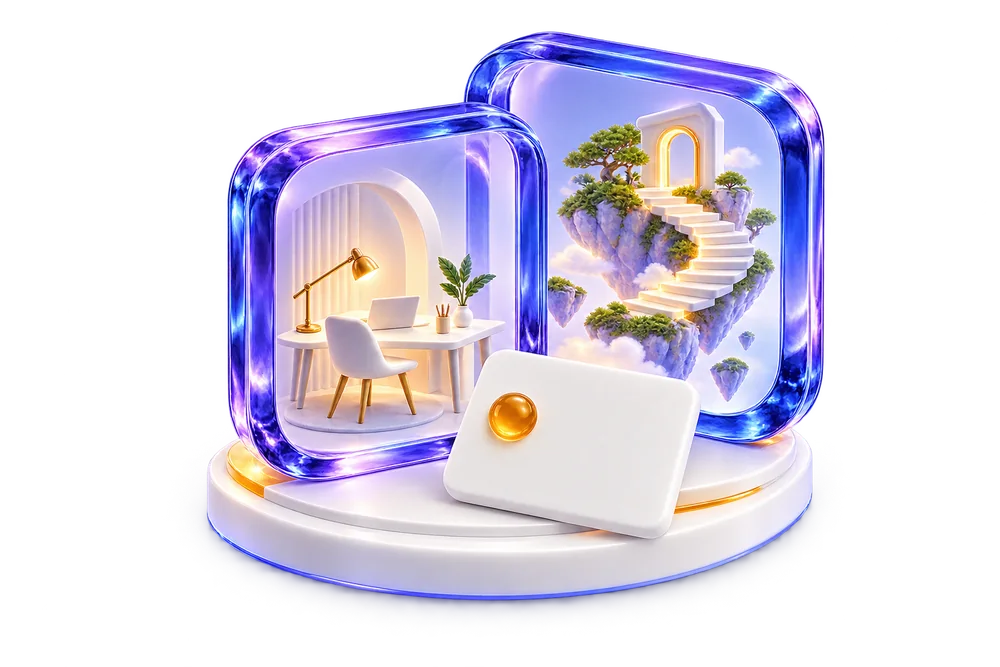
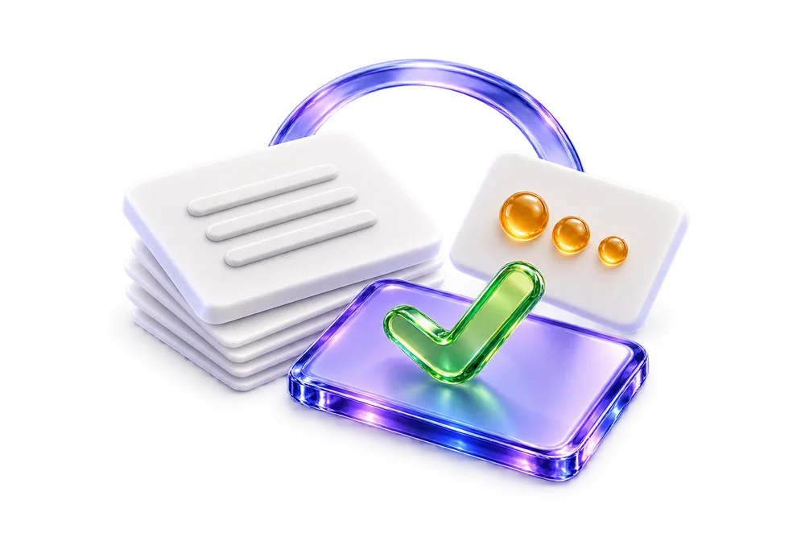

01

START WITH SOMETHING REAL
Keep the original.
Save a note, an observation, or a piece of feedback. Its original words stay intact.
For example“Our project handoffs are confusing.”
A memory you can explore.
A place to connect ideas, dream up possibilities,
and see what could come next.
No account. No API key. Your first connection in a minute.
Follow a note from the moment you save it to the possibilities it opens up. Six small steps. One connected story.

Save a note, an observation, or a piece of feedback. Its original words stay intact.

Add your interpretation beside the source. Search either one. Follow every idea back to where it began.

A customer note meets a roadmap idea. Dreaming suggests a link; you decide whether it’s useful.
Put knowledge on a review schedule. Revisit the source and bring back fresh evidence.

Explore a realistic change or a deliberately impossible world. Possibilities stay separate from facts.

Turn a promising idea into an experiment. Measure the outcome and carry what worked into the next loop.
Keep the evidence. Follow the possibility.
The illustrations explain the idea. The playground lets you try what works today.
Recognize the note. Follow the connection. Arrange your memory your way.
This alpha discovers connections with tags and keywords. Scenarios are structured templates. Model-powered dreaming and live research are on the roadmap.
Your ideas should be allowed to wander.
Your evidence should always have an address.
Your notes, documents, and source records. Preserved as captured.
Claims and connections, with sources, backlinks, and review states.
Grounded and speculative scenarios in their own separate space.
The meaning of a memory should survive a new model, a new interface, or an entirely new way of seeing.
Source records. Connected knowledge. Reviewed dreams. Portable files. A browser playground and local CLI.
Try the alpha ↗Richer integrations, model adapters, source freshness, contradiction handling, and improvement loops you can actually measure.
Read the roadmap ↗Image, sound, video, and spatial worlds. Personal styles. Voice and controller navigation. Media stored beyond Git.
See the storage vision ↗Explore the code. Challenge the assumptions.
Help turn an intriguing idea into an indispensable tool.
# One clone. Ready to explore.
git clone https://github.com/imagine-os/astral-travel.git
cd astral-travel
node bin/astral.mjs init --demo
node bin/astral.mjs dream
npm startNode.js 22+ · MIT · Works without an API key
Studying GBrain, Graphify, MemPalace, Mem0, MiroFish, and the wider memory ecosystem.
Read the research ↗